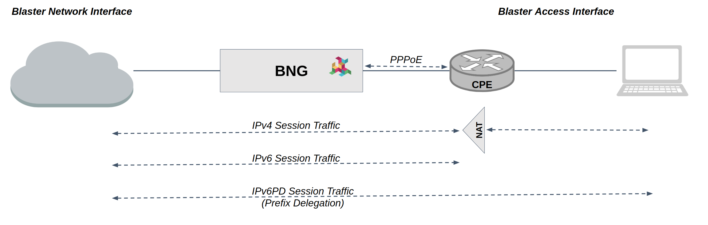

Session Traffic
The BNG Blaster can autogenerate bidirectional unicast session traffic for all addresses assigned to a session (IPv4, IPv6 and IPv6PD) and the corresponding network interface function.
This is a powerful tool to quickly verify that forwarding is correctly set up and working.
Note
All traffic sent from a network or a10nsp interfaces function is called downstream. All traffic sent from an access interface function is called upstream.
Those autogenerated traffic streams are named
session-ipv4, session-ipv6 and session-ipv6pd.

Configuration
The following example shows how to enable session traffic.
{
"session-traffic": {
"ipv4-pps": 1,
"ipv6-pps": 1,
"ipv6pd-pps": 1
}
}
{ "session-traffic": {} }
Attribute |
Description |
|---|---|
autostart |
Automatically start session traffic as soon as the
corresponding session is established.
Default: true
|
ipv4-pps |
Autogenerate bidirectional IPv4 traffic
between a network interface and all sessions.
Default: 0 (disabled)
|
ipv4-label |
Send downstream IPv4 traffic with the specified MPLS label.
Default: 0 (unlabeled)
|
ipv4-address |
Overwrite network interface IPv4 address.
Default: network interface address
|
ipv6-pps |
Generate bidirectional IPv6 traffic
between a network interface and all sessions.
Default: 0 (disabled)
|
ipv6-label |
Send downstream IPv6 traffic with the specified MPLS label.
Default: 0 (unlabeled)
|
ipv6-address |
Overwrite network interface IPv6 address
Default: network interface address
|
ipv6pd-pps |
Generate bidirectional IPv6PD (delegated prefix) traffic
between a network interface and all sessions.
Default: 0 (disabled)
|
This traffic is generated between the session and a network
interface. In case of multiple network interfaces, the preferred
network interfaces can be selected using the network-interface
option in the corresponding access configuration.
Verification
The final report includes detailed information for session traffic.
Session Traffic (Global):
------------------------------------------------------------------------------
Config:
PPS IPv4: 1
PPS IPv6: 1
PPS IPv6PD: 1
Verified Traffic Flows: 96000/96000 (100.00%)
Downstream IPv4: 16000
Downstream IPv6: 16000
Downstream IPv6PD: 16000
Upstream IPv4: 16000
Upstream IPv6: 16000
Upstream IPv6PD: 16000
Violations: >1s >1s-2s >2s-3s >3s
Downstream IPv4: 12278 ( 12.79%) 3071 3040 6167
Downstream IPv6: 12252 ( 12.76%) 3185 2900 6167
Downstream IPv6PD: 12306 ( 12.82%) 3123 2978 6205
Upstream IPv4: 12314 ( 12.83%) 3104 3033 6177
Upstream IPv6: 12252 ( 12.76%) 3184 2891 6177
Upstream IPv6PD: 12361 ( 12.88%) 3178 2957 6226
Total: 73763 ( 76.84%) 18845 17799 37119
First Sequence Received: MIN AVG MAX
Downstream IPv4 1 ( 1.00s) 9 ( 9.00s) 64 (64.00s)
Downstream IPv6 1 ( 1.00s) 9 ( 9.00s) 64 (64.00s)
Downstream IPv6PD 1 ( 1.00s) 9 ( 9.00s) 64 (64.00s)
Upstream IPv4 1 ( 1.00s) 9 ( 9.00s) 64 (64.00s)
Upstream IPv6 1 ( 1.00s) 9 ( 9.00s) 64 (64.00s)
Upstream IPv6PD 1 ( 1.00s) 9 ( 9.00s) 64 (64.00s)
The First Sequence Number Received is used to measure the forwarding
convergence. The session traffic starts automatically as soon as the session
is established using the rate configured. All traffic flows in the BNG Blaster
start with the 64bit sequence number 1. Assuming the first sequence number
received for a given flow is 5 and the configured rate is 1 PPS, this would
mean that it took between 4 and 5 seconds until forwarding is working.